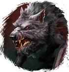

Свежее мясцо
Предметы / Ключи
Открыть в интерактивной вики →
| Вес | 10 |
|---|---|
| Цена | 100 |
Описание
Для получения требуется убить специальную группу волков во главе с
Требуется для призыва Медведь.
Медведь.
Также можно получить во время различных игровых ивентов.

Альфа в волчьей пещере в Медвежьей пещере.Требуется для призыва
Медведь. Также можно получить во время различных игровых ивентов.
| Мясо Альфы, которое выманивает Медведя из Берлоги. |
Дроп
Применение
|
Как добыть
| Получаем за победу над: |